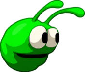
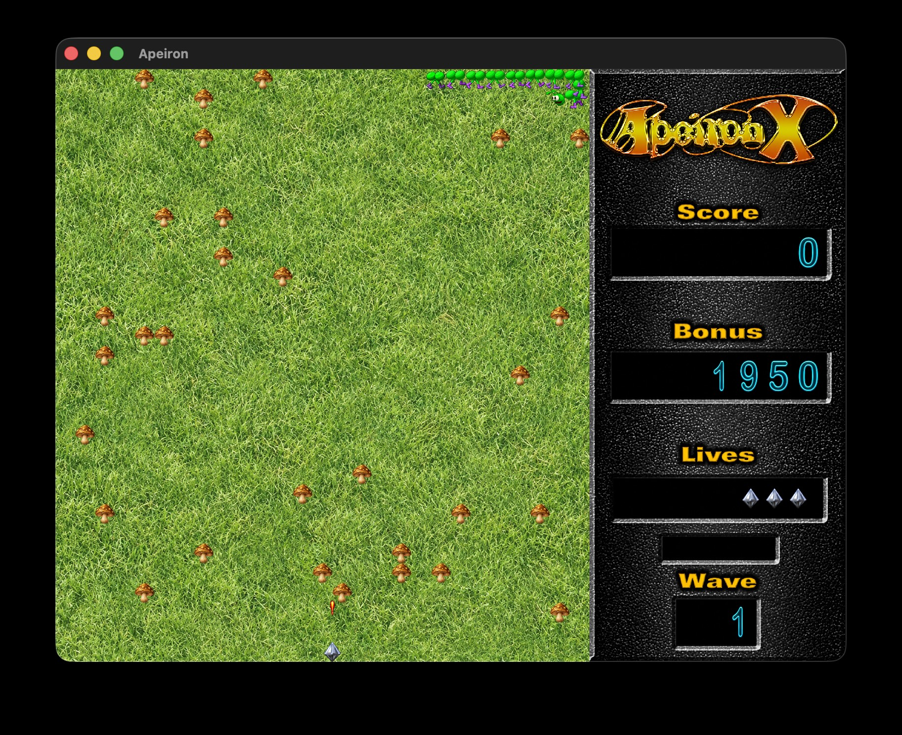
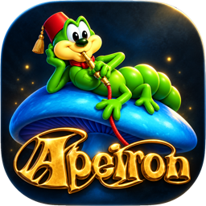

ENEMY / 001
Pede
The familiar menace of the arena. A challenge that grows with every wave.
Fast-paced arcade action, familiar foes, and another shot at a high score. Apeiron X brings the classic back to the Mac as a native SpriteKit game.

Move your ship, keep the enemies at bay, and fight through wave after wave. The original gameplay stays true to its roots, now with a fresh visual polish.

The familiar menace of the arena. A challenge that grows with every wave.
More enemies make the chaos unpredictable. Quick reactions beat blind luck.
Power-ups and shields give your next high-score run a fighting chance.
Not a browser game. Not an emulator. A native macOS port built with SpriteKit and AppKit.
Native windows, SpriteKit rendering, and support for macOS 11 or later.
01 / NATIVEMouse, keyboard, and compatible PlayStation, Xbox, or other controllers.
02 / INPUTRemastered sprites without changing the classic collision rules.
03 / VISUALSLocal leaderboards and that familiar urge to give it one more try.
04 / REPLAYGo old school with mouse and keyboard, or pick up a controller. Customize button mappings for PlayStation, Xbox, and other compatible gamepads in the game settings.

Apeiron X brings classic arcade action to macOS. Follow the project and check for published game releases.
Check ReleasesDownloads are available only if a release has been published. A signed and notarized macOS release is not yet confirmed.
Familiar gameplay. Remastered artwork. Native macOS experience.
Here are a few answers before your next life begins.
The arena is waiting. One more round?
Apeiron X on GitHub